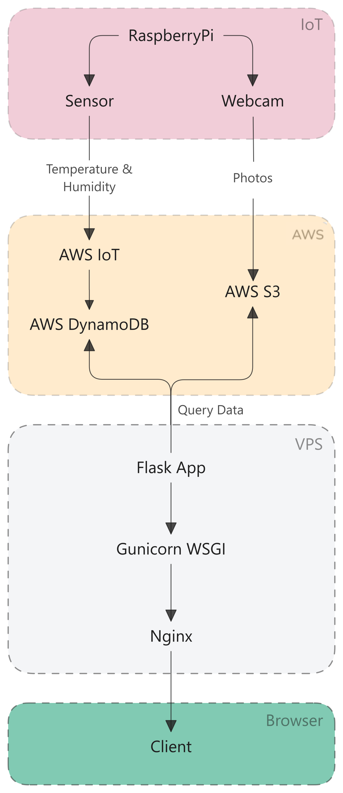
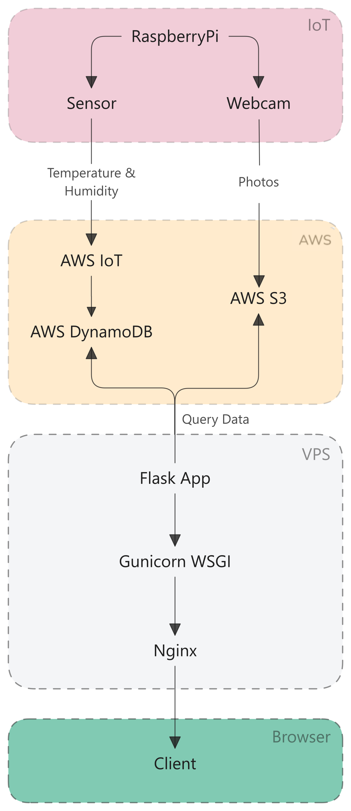

Justin Pauckert
Quantum Engineer | Software Developer
Projects
Plantmonitor - Dynamic
Website for monitoring plant health using AWS, Flask, and Nginx.
Plantmonitor - Static
Website for monitoring plant health using Github Actions and Docker.
Quantum Engineer | Software Developer
Website for monitoring plant health using AWS, Flask, and Nginx.
Website for monitoring plant health using Github Actions and Docker.